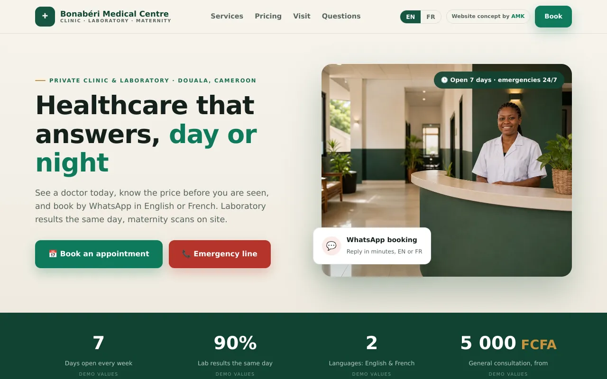

Les rendez-vous sur WhatsApp, vos examens et leur préparation expliqués, vos tarifs en FCFA. En ligne dès votre validation, et l'aperçu gratuit est dans votre téléphone sous 24 heures après validation du brief.
Un patient qui cherche à onze heures du soir sur son téléphone ne lit pas une brochure. Il veut six réponses, vite.
Les spécialités et les examens que vous faites réellement, pas la liste de tout ce qu'un hôpital pourrait faire. Un patient qui vient pour un examen que vous ne faites pas ne revient pas.
La question que vous répondez au téléphone toute la journée. Écrite une fois, elle cesse d'être un appel, et elle évite le patient qui arrive en ayant mangé.
Affichez le tarif de consultation et les examens courants, ou n'affichez rien et dites-le. Ce qui fait perdre un patient, c'est le silence : il imagine le pire et va ailleurs.
Prévenu sur WhatsApp quand c'est prêt, retiré au laboratoire, au lieu de revenir trois fois demander. Dites le délai avant qu'il se déplace.
Sur des axes comme Deido-Bassa, un nom et un quartier ne sont pas un itinéraire. Le repère que tout le monde connaît, plus un lien qui ouvre Maps en un clic.
Les patients écrivent au lieu d'appeler, souvent en dehors de vos horaires. Chaque bouton ouvre WhatsApp avec leur message déjà écrit.
Pas des captures d'écran. Des sites concepts complets, en ligne, que vous pouvez ouvrir sur votre téléphone à l'instant.

Tarifs en FCFA bien visibles, six services, labo le jour même, échographies de maternité, ligne d'urgence, rendez-vous sur WhatsApp.
Ouvrir le site →Le Cameroun a deux langues officielles et la plupart des sites de cliniques n'en ont qu'une. Le vôtre en aura deux, inclus, jamais en supplément.
Voir tous les concepts →À partir de 150 000 FCFA, une fois : site bilingue jusqu'à 6 pages, fiche Google créée ou optimisée, domaine et hébergement. Au-delà — catalogue, séance photo, logo, contenu — c'est chiffré à l'écran avant de commencer, jamais après. L'aperçu est gratuit.
Non inclus, et dit franchement : les pages supplémentaires au-delà de la première (devis séparé), et la rédaction de vos contenus à votre place. Votre domaine et vos fichiers restent à 100 % à vous, toujours.
Entièrement à distance, tout se passe sur WhatsApp.